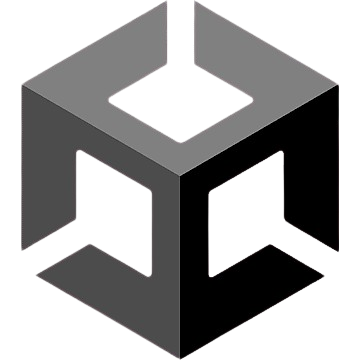
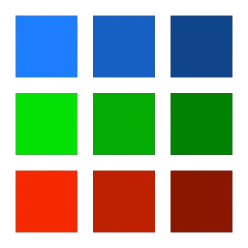

Micco
 Em Mico, você assume o papel de um gatinho minerador extremamente pragmático e determinado. Sem tempo para distrações, ele se aventura nas profundezas de uma vasta e perigosa caverna em busca do que realmente importa: pedras preciosas e minerais raros. Cada camada exige planejamento cuidadoso, upgrades e estratégias eficientes para superar desafios e inimigos. Aqui, a mineração não é só uma aventura é um trabalho sério.
Ver projeto